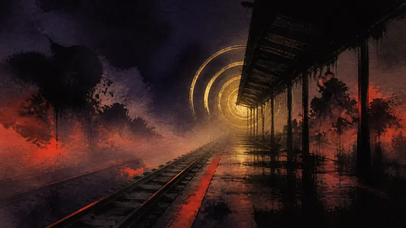
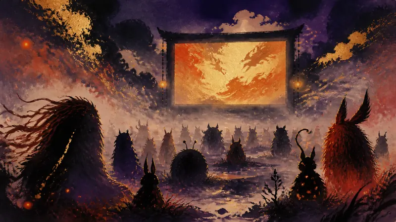
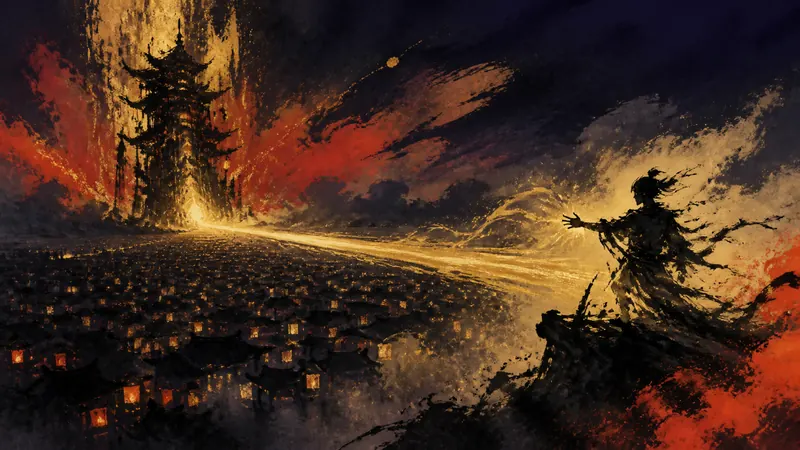
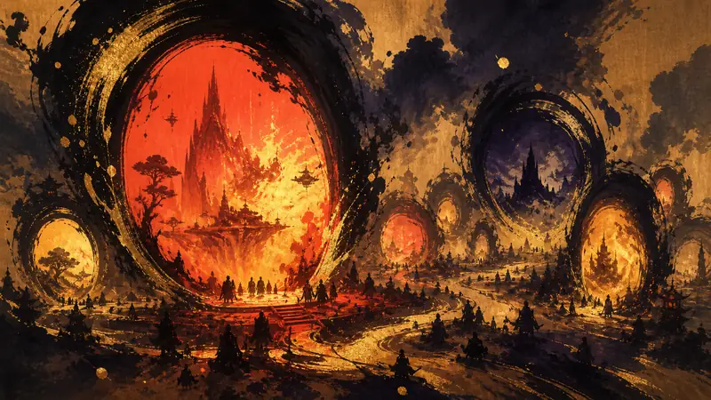
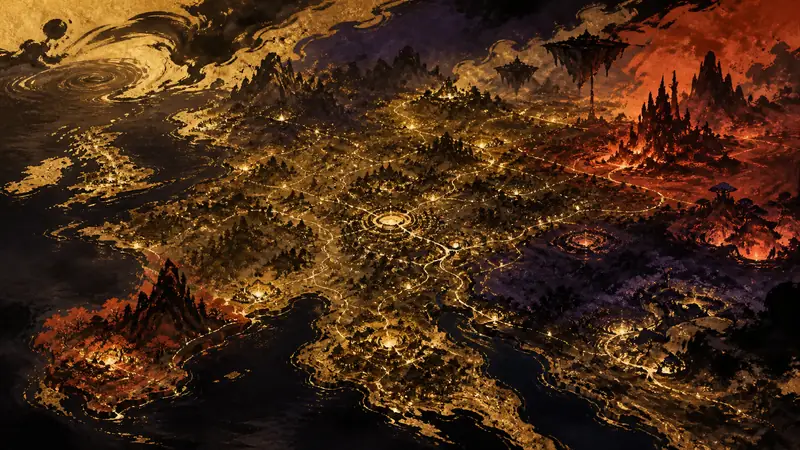
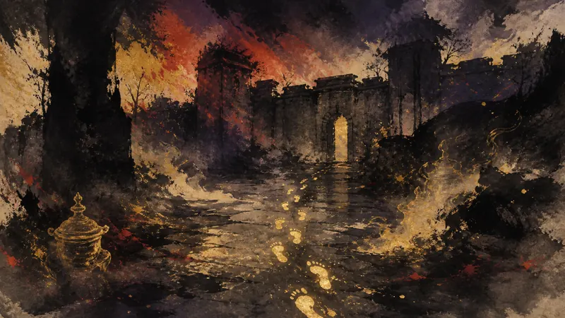

AUTOMATON

『007 First Light』Switch 2版、3度目の延期（訳）
Switch 2版の延期はこれで3度目となり、以前の「開発は順調」という説明と最新情報との間に明確な食い違いが生じている。現時点で提供されている情報では新たな発売時期は未定のままで、プレイヤーは購入やプレイの予定を立てられない。
視点：3度目の延期によって、プレイヤーがもともと立てられた予定は崩れ、予約や待ち続けるかどうかを改めて考える必要が生じた。
先鴉｜夜明けの便り
プレイヤーの主体性：政策がそれをどう制限し、産業がそれをどう形づくり、物語設計がそれをどう実現するか。
最前線
AUTOMATON

Switch 2版の延期はこれで3度目となり、以前の「開発は順調」という説明と最新情報との間に明確な食い違いが生じている。現時点で提供されている情報では新たな発売時期は未定のままで、プレイヤーは購入やプレイの予定を立てられない。
視点：3度目の延期によって、プレイヤーがもともと立てられた予定は崩れ、予約や待ち続けるかどうかを改めて考える必要が生じた。
IGN

2027年の公開予定によって、この映画はまずプレイヤーの将来の期待候補に加わることになる。IGNは『Pokémon：Wild Card』の映画化が発表されたと報じているが、現時点で提供されている情報には、これ以上のストーリーや公開時期の詳細はない。
視点：プレイヤーにとって、このニュースが増やすのは待つ対象となる文化的な選択肢であり、すぐに遊べるコンテンツではない。
Niko News by Niko Partners

中国市場の需要に後押しされ、『Phantom Blade Zero』がSteam全世界の売上ランキング1位に浮上した。この順位はState of Play特番の配信前に記録されたもので、プレイヤーの関心がすでに予約や購入という行動に変わっていることを示している。
視点：売上ランキングはプレイヤーの関心を、プラットフォームが順位付けできる集団的なシグナルへ変えるが、その期待が実際のプレイを支えるほどのものかまでは教えてくれない。
PC Gamer

週次ランキングが、8月30日時点でSteamで人気のジャンルを10の選択肢に整理し、プレイヤーが市場を素早く見渡せるようにしている。人気の度合いは集団の関心を示せるが、どのジャンルが特定のプレイヤーに向いているかを直接導くことはできない。
視点：ジャンルランキングは検索の手間を減らす一方、「最も多く遊ばれているもの」を「最も遊ぶ価値があるもの」と取り違えやすくもする。
EGDF

6600のスタジオと9万5000人を超える従業者が、欧州ゲーム産業を動かし続ける大きな基盤を形作っている。EGDFによると、この報告書は欧州28か国の2024年の産業データをまとめ、産業がレジリエンスを示していると強調している。
視点：産業の数字は、プレイヤーに選択の背後にある労働の基盤を見せると同時に、人員規模が作品の未来をプレイヤーに左右できることを意味しないと気づかせる。
最前線
AUTOMATON

見慣れた砦が突然、大量の謎めいたメッセージで覆われ、プレイヤーは本来存在しない光景に気づき始めている。これはコミュニティの交流と環境の読み取りが共同で生み出した現象であり、ゲーム世界に正式なコンテンツが追加されたわけではない。
視点：プレイヤーのメッセージは同じ場所に新たな解釈の道筋を生み出し、どの手がかりを信じるかを自分で判断する余地も残している。